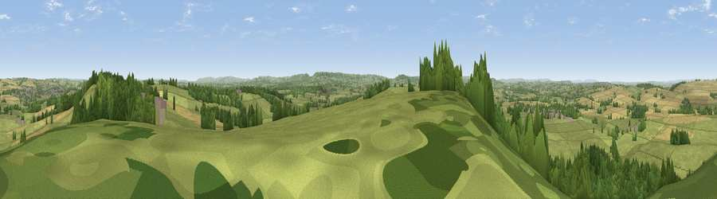

Viewpoint near Lillington
#8485 in England · top 17% of its area beats it · near Lillington · path 213 mWhere it is
The exact computed spot (ST 62125 13175). Click the marker for map links.
Public access: the nearest public right of way is about 213 m away — the final stretch may cross private land. Computed from Natural England's CRoW access layer and OpenStreetMap rights of way — not the legal definitive map. Always verify locally.
The view, rendered

A 360° render of this exact spot computed from the terrain model, tree cover and land cover — summer colours, afternoon light, calibrated against photographs of famous viewpoints. Real trees, hedges and buildings will differ in detail.
The panorama
Grey silhouette: terrain skyline in each direction (720 bearings, Earth curvature and refraction included). Dashed green: skyline with trees (+15 m) and buildings (+8 m) as obstacles. Blue strip: how far the ground is visible on each bearing.
Where the view opens
Wedge length = distance to the farthest visible ground on that bearing (vegetation-aware). Rings at 10, 25 and 50 km.
What fills the view
60% grassland · 23% woodland · 15% cropland · 2% built-up
Angular shares of the visible panorama (visual magnitude), not map area. Landscape diversity 0.44 (0–1 Shannon).
Key numbers
More beautiful places nearby
The staircase of upgrades: each row has a higher view potential than everything closer. Driving times are estimates from straight-line distance, calibrated against real road routing — check an actual route before setting out.
| Place | Direction | Drive | Score |
|---|---|---|---|
| Viewpoint near Lillington | NE · 1 km | ~3 min | 68.7 |
| Round Hill | N · 6 km | ~13 min | 70.4 |
| Viewpoint near Hilfield | SSE · 8 km | ~16 min | 71.6 |
| The Beacon | N · 10 km | ~20 min | 75.8 |
| Viewpoint near North Poorton | SW · 17 km | ~30 min | 77.0 |
| Viewpoint near Nettlecombe | SSW · 20 km | ~34 min | 79.3 |
| Viewpoint near Askerswell | SSW · 20 km | ~34 min | 81.7 |
| Lewesdon Hill | SW · 22 km | ~36 min | 83.3 |
50.91679, -2.54016 · source: screening · position refined by local search. Computed location — check access rights before visiting.